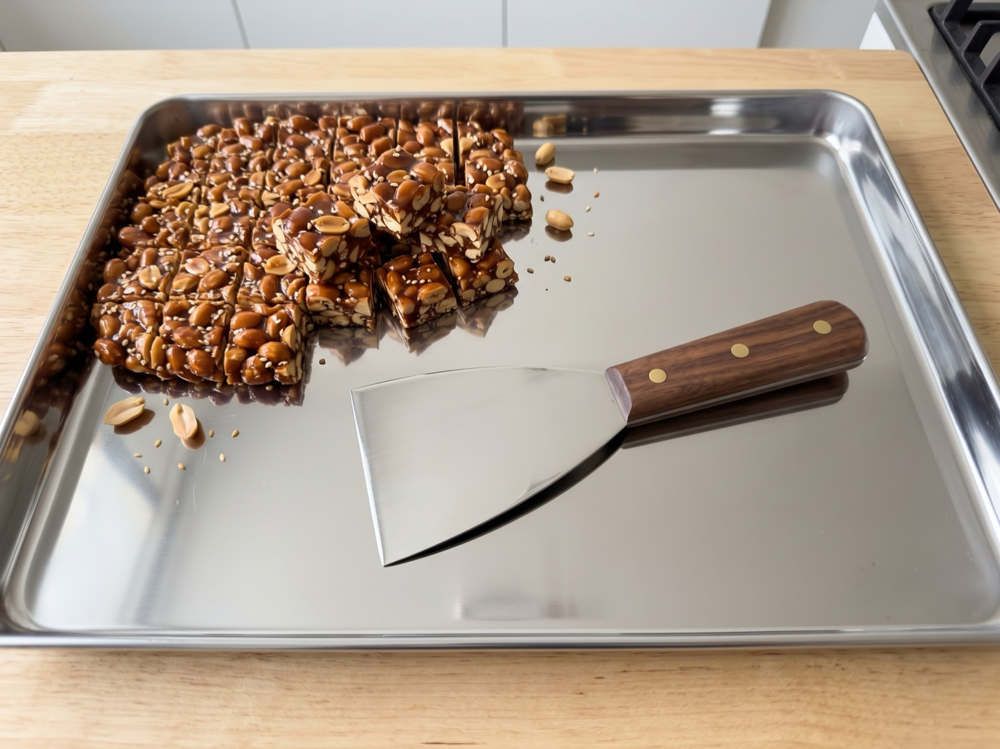
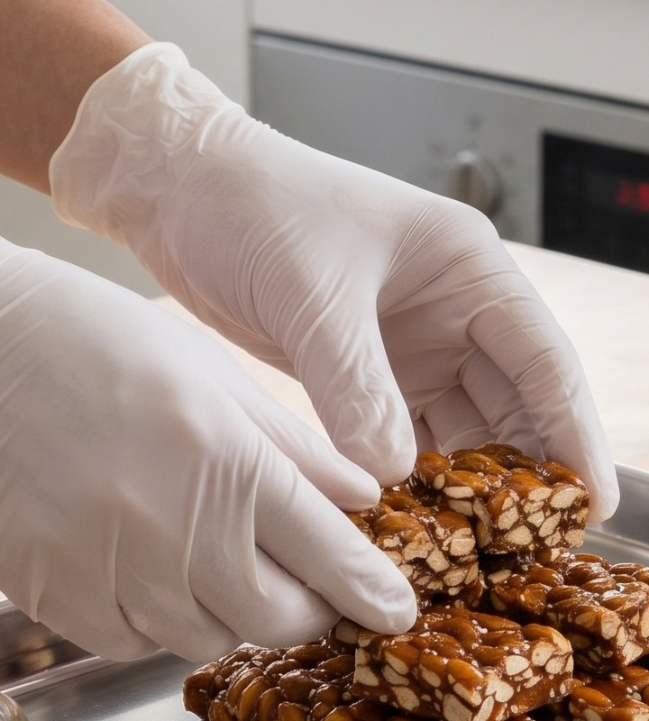
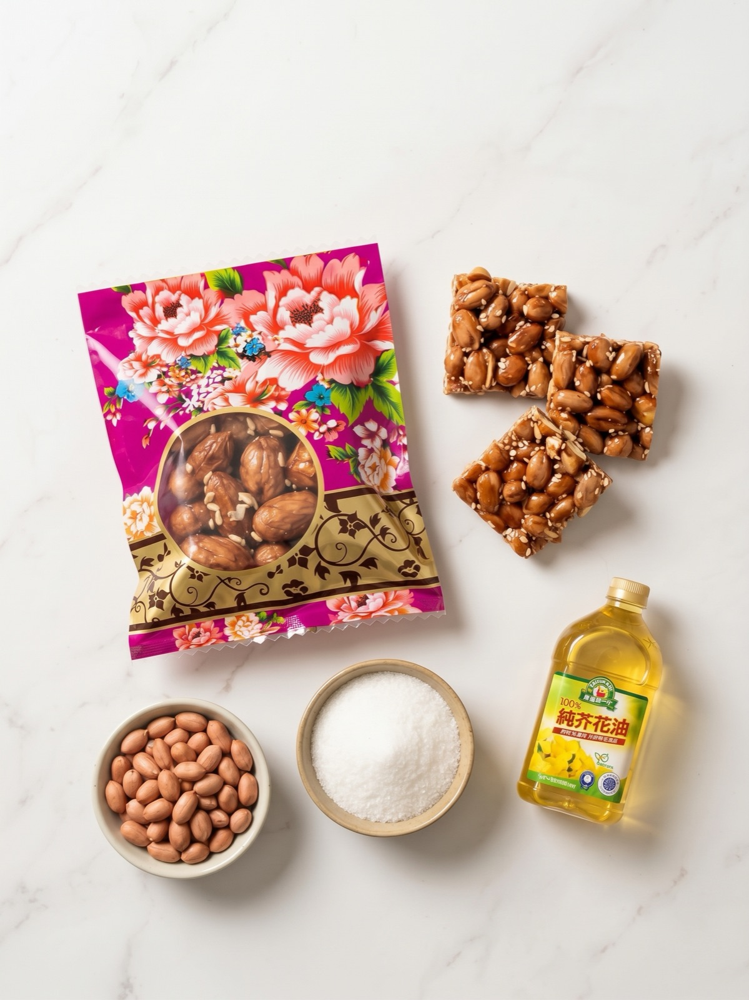
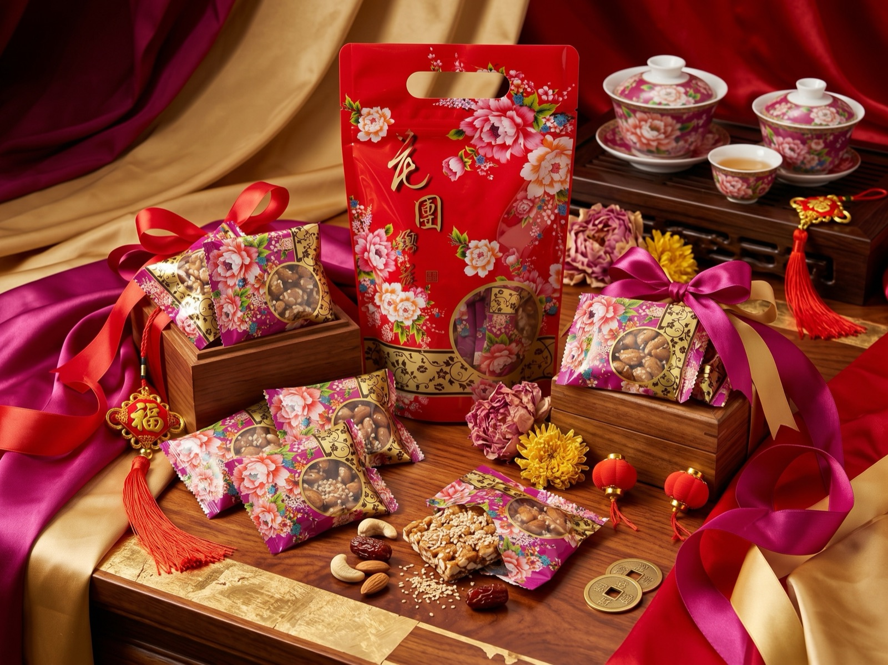

雲林花生
主要來自北港的花生，是這份甜的主角。花生香氣，讓每一口都有記憶點。
YUNLIN PEANUTSMADE WITH HEART, FROM YUNLIN
從雲林花生的醇厚香氣出發，把用心選的原料，做成每一口都想細細品嚐的手作花生糖。


THE STORY / 我們的故事
在雲林莿桐，我們喜歡花生最純粹的香氣。選用雲林的花生，主要來自北港，再搭配認真挑選的原料，讓熟悉的甜，多一點值得記住的細節。
沒有過分複雜的配方，也不添加防腐劑與人工香料。希望你打開一包花生糖時，吃到的是樸實、真誠的好味道。
看看我們選了什麼GOOD THINGS INSIDE
每一種原料，都有它來的地方。
好味道，從好好選擇開始。

從第一種原料開始，
就想把這份甜好好做好。
主要來自北港的花生，是這份甜的主角。花生香氣，讓每一口都有記憶點。
YUNLIN PEANUTS選用台糖特砂與苗栗特級麥芽糖，讓甜味成為花生香的溫柔陪襯。
A GENTLE SWEETNESS搭配得意的一天芥花油，不添加防腐劑與人工香料，留住原料本來的味道。
NO ARTIFICIAL FLAVORSTHE LITTLE SWEET THING
溪美手作 · 經典風味
一包花生糖，是給自己的片刻甜，也是想和喜歡的人分享的心意。真實的花生香氣，藏在每一口酥香裡。
訂購需求送出後，由店家確認數量、運送方式與費用。商品含花生，對花生過敏者請勿食用。送禮畫面為情境示意，包裝與內容以實際商品為準。

把甜，留給想好好珍惜的每一天。
A LITTLE JOY, MADE BY HAND.ANOTHER KIND OF ENCOUNTER
溪美手作的另一段旅程
除了味蕾的甜，也留一點時間，聽聽心裡的聲音。風谷占卜提供九宮命理服務，歡迎先與我們聊聊需求，再安排適合的時間。
服務內容、方式與實際費用，請以店家回覆為準。
LET'S TALK
想訂幾包花生糖？或是想了解風谷占卜？告訴我們你的想法，陳女士會再與你確認細節。